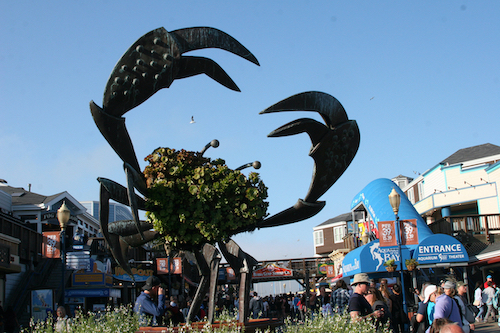
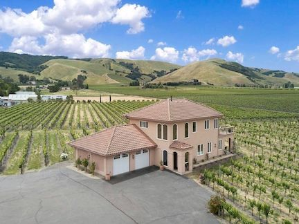

We started our Napa Winery vacation in San Francisco. We kicked off the festivities at Fog Harbor Fish House at Pier 39, where I enjoyed Cioppino (a tomato broth-based seafood stew). From there, were hopped on the top deck of a tour bus and whizzed around downtown San Francisco and across the Golden Gate bridge.

We drove to our rental home in Sonoma, California, situated right in the middle of a working vineyard, where they would be harvesting their chardonnay grapes in the middle of our trip. It was quite a beautiful and spacious house that we shared with 2 other couples. From there we planned the afternoon's winery events while eating breakfast, and came back "home" where we cooked our own dinner and enjoyed each other's company while we reflected on the day's events. And of course, we drank wine.

denotes favorites